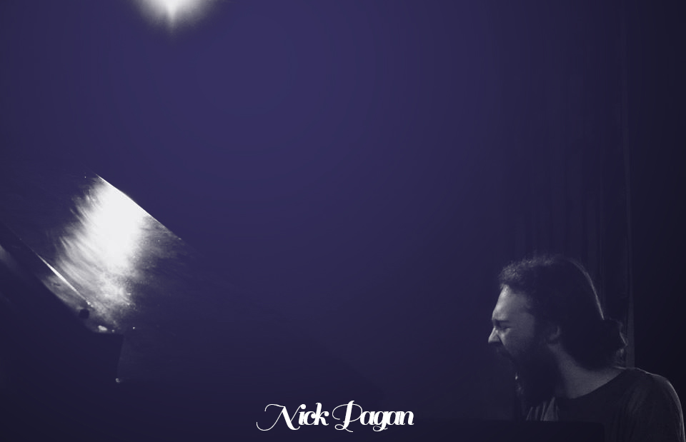

Biography
Nick Pagan is a singer-songwriter from Hanson Massachusetts. His music often takes inspiration from artists such as Fionn Regan, Neil Young, Earth, and Anne Briggs.
His soon-to-come debut album, Evergreen, was produced with the help of his Dad, Tom Pagan on an old Teac reel to reel. Recorded live, it serves as the culmination of several years of living and writing.
Nick Pagan's Links